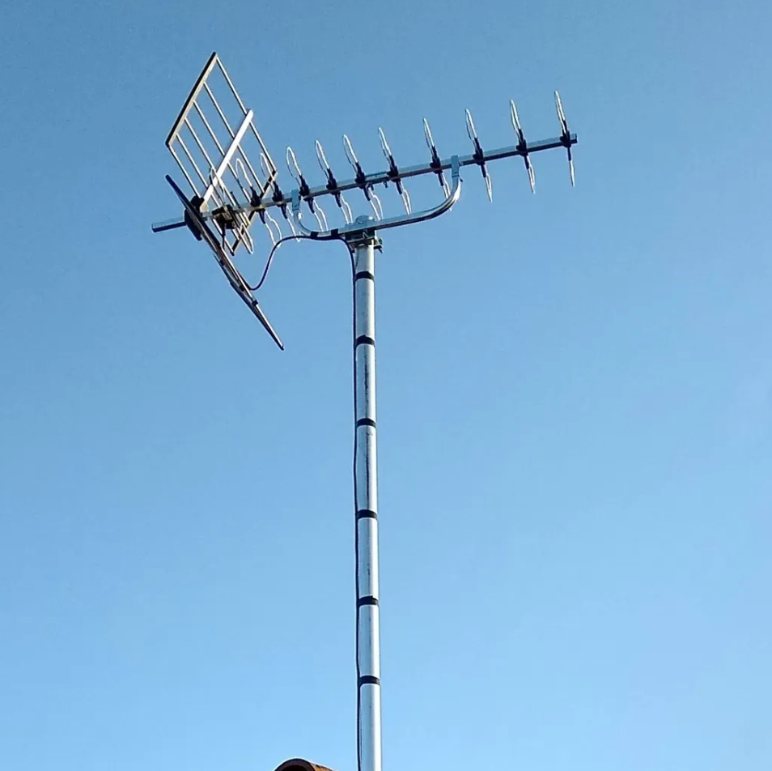
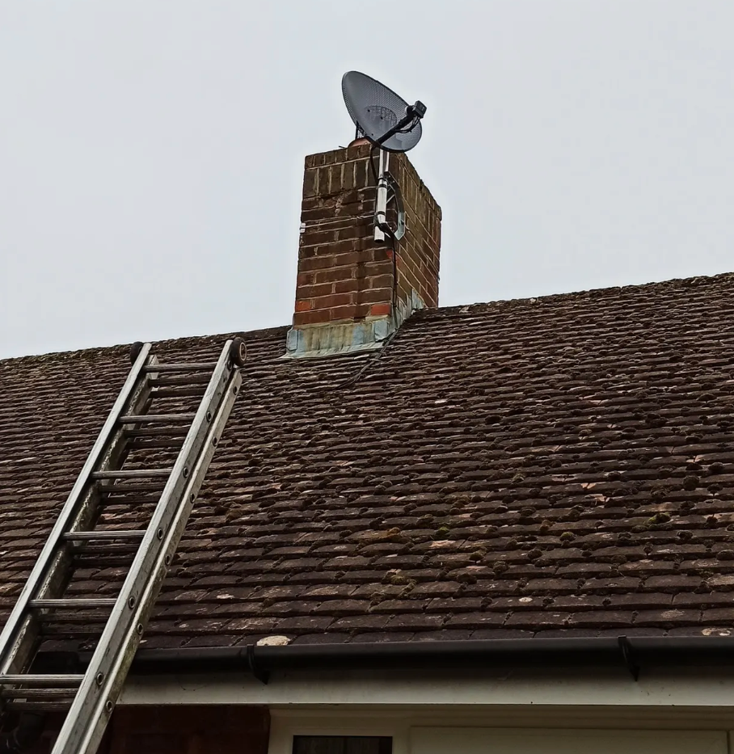
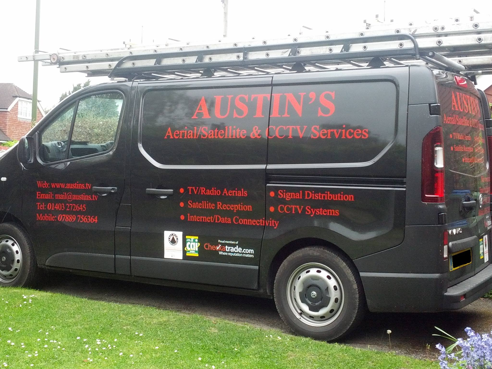
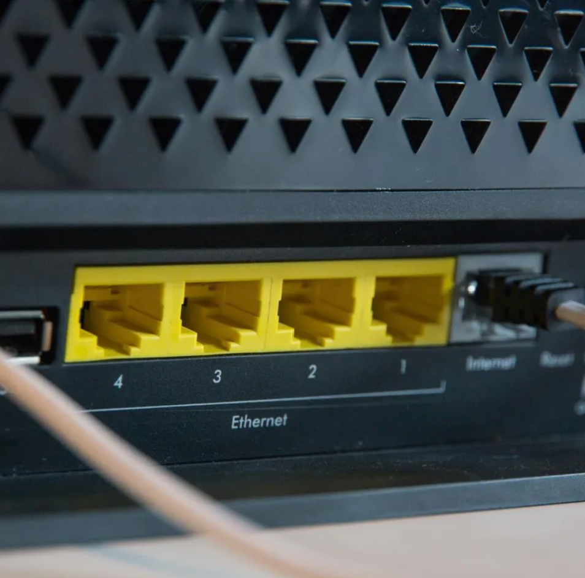

Please find below a detailed list of services we provide:
- TV/Radio & Satellite. Digital signal reception
- (Freeview/Freesat & DAB) Sky satellite service & installation.
- Signal distribution systems. Computer CAT 5/6 Ethernet home networks.
- CCTV services & installations
- Domestic & Communal systems
- Fringe & problem area reception assistance
- Free estimates and advice (within local area, 15 Mile radius of Horsham)
- No call out fee (within local area)
- Aerial services since 1983
- A quality service conforming to codes of practice, at a fair cost
- Impartial and honest opinion
- Uniformed workwear, sign written company vehicle
- Typical appropriate realistic cost provided (not from/start cost!)
- £5m Public Liability insurance
- Diagnostic test/spectrum analyser equipment used.
- Approved by Checkatrade
- Approved by Trading Standards
- Approved Trader for Domestic & Systems services/installations by the CAI (Confederation of Aerial Industries)
- Members of the "Federation of Small Business"
Please see below examples of our work:



